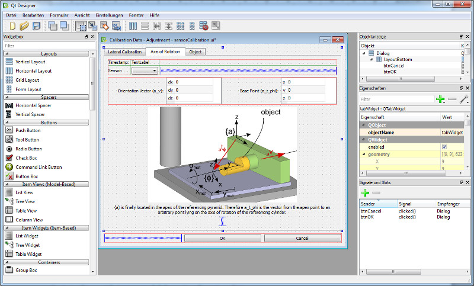

Qt¶
Itom is written in C++ using the open source framework Qt. Qt enhances the functionalities of C++, mainly by providing a cross-platform GUI, allowing itom to run on both Windows and Linux operating systems. Since itom is also designed for multi-core processors, its modules run partly in different threads that allow operating an actuator, simultaneously acquiring images while keeping the main window reactive for user interaction. Therefore, the core application, the python script engine as well as all plugins run in their separate threads.
{kind=link}
Modern, user-friendly interface, independent of hardware platform
Design of custom GUIs in the Qt Designer WYSIWYG tool (drag & drop)
Events created by the GUI can be linked to Python functions
{kind=link}
Measurement systems can be extended by specific user interfaces. Therefore, a WYSIWYG design tool allows the creation of personalized user interfaces at runtime without requiring C++ programming experience. Furthermore, it is possible to integrate itom’s plot and visualization tools into these interfaces. Afterwards, interface elements can be connected to scripted functionalities. As a result, users can configure the appearance of their measurement system to optimally enable or protect the underlying functionalities.